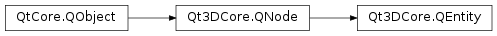

Qt3DCore.QEntity¶
Inherited by: Qt3DExtras.QSkyboxEntity, Qt3DExtras.QText2DEntity, Qt3DExtras.QAbstractCameraController, Qt3DExtras.QFirstPersonCameraController, Qt3DExtras.QOrbitCameraController, Qt3DRender.QCamera
Synopsis¶
Functions¶
- def
addComponent(comp) - def
components() - def
parentEntity() - def
removeComponent(comp)
Detailed Description¶
Qt3DCore.QEntityis aQt3DCore.QNodesubclass that can aggregate severalQt3DCore.QComponentinstances that will specify its behavior.By itself a
Qt3DCore.QEntityis an empty shell. The behavior of aQt3DCore.QEntityobject is defined by theQt3DCore.QComponentobjects it references. Each Qt3D backend aspect will be able to interpret and process an Entity by recognizing which components it is made up of. One aspect may decide to only process entities composed of a singleQt3DCore.QTransformcomponent whilst another may focus onQt3DInput.QMouseHandler.See also
Qt3DCore.QComponentQt3DCore.QTransform
-
class
PySide2.Qt3DCore.Qt3DCore.QEntity([parent=nullptr])¶ Parameters: parent – PySide2.Qt3DCore.Qt3DCore::QNodeConstructs a new
Qt3DCore.QEntityinstance withparentas parent.
-
PySide2.Qt3DCore.Qt3DCore.QEntity.addComponent(comp)¶ Parameters: comp – PySide2.Qt3DCore.Qt3DCore::QComponentAdds a new reference to the component
comp.Note
If the
Qt3DCore.QComponenthas no parent, theQt3DCore.QEntitywill set itself as its parent thereby taking ownership of the component.
-
PySide2.Qt3DCore.Qt3DCore.QEntity.components()¶ Return type: Returns the list of
Qt3DCore.QComponentinstances the entity is referencing.
-
PySide2.Qt3DCore.Qt3DCore.QEntity.parentEntity()¶ Return type: PySide2.Qt3DCore.Qt3DCore::QEntityReturns the parent
Qt3DCore.QEntityinstance of this entity. If the immediate parent isn’t aQt3DCore.QEntity, this function traverses up the scene hierarchy until a parentQt3DCore.QEntityis found. If noQt3DCore.QEntityparent can be found, returns null.
-
PySide2.Qt3DCore.Qt3DCore.QEntity.removeComponent(comp)¶ Parameters: comp – PySide2.Qt3DCore.Qt3DCore::QComponentRemoves the reference to
comp.
© 2018 The Qt Company Ltd. Documentation contributions included herein are the copyrights of their respective owners. The documentation provided herein is licensed under the terms of the GNU Free Documentation License version 1.3 as published by the Free Software Foundation. Qt and respective logos are trademarks of The Qt Company Ltd. in Finland and/or other countries worldwide. All other trademarks are property of their respective owners.